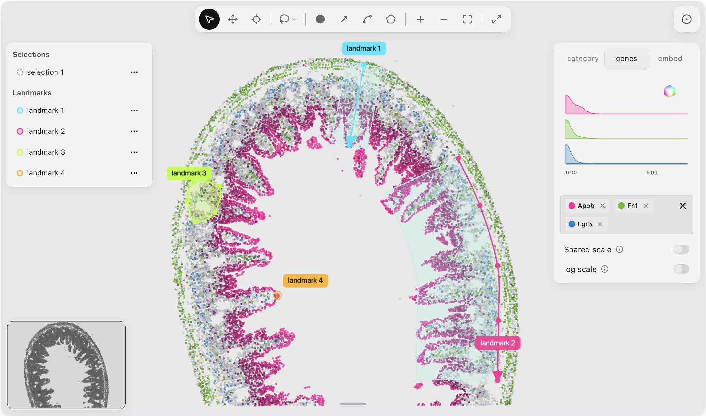

LandmarksWidget
Lasso, rectangle, ellipse; point, line, spline, shape. Color by category
or gene. Neighbor expand runs in the browser. Read selections back with
get_obs_names.

Lasso, rectangle, ellipse; point, line, spline, shape. Color by category
or gene. Neighbor expand runs in the browser. Read selections back with
get_obs_names.
